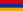

List of countries by gross national savings
This is a list of countries by gross national savings. Gross national saving is derived by deducting final consumption expenditure from Gross national disposable income, and consists of personal saving, plus business saving, plus government saving, but excludes foreign saving. The figures are presented as a percent of GDP. A negative number indicates that the economy as a whole is spending more income than it produces, thus drawing down national wealth.
| Country (or area) | GNS | Year |
|---|---|---|
| 61.2 | 2020 | |
| 57.0 | 2019 | |
| 54.6 | 2020 | |
| 54.4 | 2020 | |
| 50.5 | 2020 | |
| 50.0 | 2017 | |
| 47.8 | 2019 | |
| 46.9 | 2020 | |
| 44.8 | 2019 | |
| 44.4 | 2019 | |
| 44.0 | 2019 | |
| 40.1 | 2019 | |
| 38.7 | 2020 | |
| 38.6 | 2019 | |
| 38.6 | 2019 | |
| 37.3 | 2018 | |
| 37.0 | 2020 | |
| 36.6 | 2019 | |
| 35.4 | 2020 | |
| 34.8 | 2020 | |
| 34.8 | 2019 | |
| 34.6 | 2019 | |
| 34.1 | 2020 | |
| 33.8 | 2020 | |
| 33.4 | 2019 | |
| 33.0 | 2020 | |
| 32.2 | 2020 | |
| 32.0 | 2020 | |
| 31.7 | 2020 | |
| 31.6 | 2020 | |
| 31.6 | 2020 | |
| 31.3 | 2020 | |
| 30.7 | 2020 | |
| 30.5 | 2020 | |
| 30.3 | 2020 | |
| 29.8 | 2020 | |
| 29.8 | 2020 | |
| 29.7 | 2020 | |
| 29.7 | 2020 | |
| 29.4 | 2020 | |
| 29.2 | 2020 | |
| 29.0 | 2020 | |
| 28.9 | 2020 | |
| 28.6 | 2020 | |
| 28.5 | 2020 | |
| 28.3 | 2020 | |
| 28.0 | 2020 | |
| 27.9 | 2020 | |
| 27.0 | 2020 | |
| 26.9 | 2020 | |
| 26.2 | 2019 | |
| 26.2 | 2020 | |
| 26.1 | 2020 | |
| 26.1 | 2020 | |
| 26.1 | 2020 | |
| 25.4 | 2020 | |
| 25.2 | 2020 | |
| 25.1 | 2020 | |
| 25.1 | 2020 | |
| 24.9 | 2020 | |
| 24.9 | 2020 | |
| 24.8 | 2020 | |
| 24.7 | 2019 | |
| 24.1 | 2020 | |
| 24.1 | 2020 | |
| 23.8 | 2020 | |
| 23.7 | 2020 | |
| 23.6 | 2020 | |
| 23.5 | 2020 | |
| 23.4 | 2020 | |
| 23.4 | 2020 | |
| 23.1 | 2020 | |
| 22.4 | 2019 | |
| 21.9 | 2020 | |
| 21.8 | 2020 | |
| 21.8 | 2020 | |
| 21.7 | 2020 | |
| 21.6 | 2019 | |
| 21.6 | 2020 | |
| 21.5 | 2020 | |
| 21.4 | 2020 | |
| 21.2 | 2019 | |
| 21.2 | 2020 | |
| 21.1 | 2020 | |
| 20.9 | 2020 | |
| 20.8 | 2020 | |
| 20.7 | 2020 | |
| 20.5 | 2020 | |
| 20.3 | 2016 | |
| 20.2 | 2020 | |
| 20.1 | 2020 | |
| 20.0 | 2020 | |
| 19.7 | 2020 | |
| 19.1 | 2020 | |
| 19.0 | 2020 | |
| 18.9 | 2020 | |
| 18.5 | 2020 | |
| 18.5 | 2020 | |
| 18.2 | 2019 | |
| 18.1 | 2020 | |
| 18.1 | 2020 | |
| 17.8 | 2020 | |
| 17.7 | 2020 | |
| 17.6 | 2020 | |
| 17.6 | 2020 | |
| 17.2 | 2020 | |
| 17.0 | 2019 | |
| 16.8 | 2020 | |
| 16.8 | 2020 | |
| 16.4 | 2020 | |
| 16.4 | 2017 | |
| 15.8 | 2020 | |
| 15.1 | 2019 | |
| 14.7 | 2020 | |
| 14.5 | 2019 | |
| 14.3 | 2020 | |
| 14.3 | 2020 | |
| 14.3 | 2020 | |
| 14.1 | 2020 | |
| 14.0 | 2018 | |
| 13.8 | 2020 | |
| 13.5 | 2015 | |
| 13.4 | 2019 | |
| 12.5 | 2020 | |
| 11.6 | 2019 | |
| 10.5 | 2020 | |
| 10.2 | 2020 | |
| 10.1 | 2014 | |
| 9.6 | 2020 | |
|  Armenia | 8.6 | 2020 |
| 8.4 | 2020 | |
| 8.2 | 2020 | |
| 7.9 | 2020 | |
| 7.8 | 2020 | |
| Georgia | 7.6 | 2020 |
| 7.3 | 2020 | |
| 7.1 | 2019 | |
| 6.5 | 2020 | |
| 6.3 | 2020 | |
| 6.2 | 2020 | |
| 6.2 | 2020 | |
| 6.2 | 2017 | |
| 6.1 | 2020 | |
| 5.9 | 2019 | |
| 5.9 | 2020 | |
| 5.3 | 2020 | |
| 5.1 | 2020 | |
| 4.9 | 2020 | |
| 4.7 | 2020 | |
| 4.5 | 2019 | |
| 3.6 | 2020 | |
| 3.6 | 2016 | |
| 3.4 | 2020 | |
| 2.2 | 2020 | |
| 2.1 | 2020 | |
| 1.9 | 2020 | |
| 1.7 | 2020 | |
| 1.4 | 2020 | |
| 0.1 | 2020 | |
| –0.5 | 2020 | |
| –0.6 | 2019 | |
| –1.8 | 2019 | |
| –2.1 | 2020 | |
| –3.6 | 2018 | |
| –3.8 | 2020 | |
| –5.6 | 2020 | |
| –6.0 | 2020 | |
| –6.7 | 2020 | |
| –7.9 | 2020 | |
| –8.4 | 2016 | |
| –12.6 | 2020 | |
| –14.9 | 2020 | |
| –18.4 | 2019 | |
| –24.8 | 2011 | |
| –30.9 | 2020 | |
| –72.6 | 2020 |
References
[edit]- ^ "Gross domestic savings (% of GDP) | Data". data.worldbank.org. Retrieved 2021-09-28.